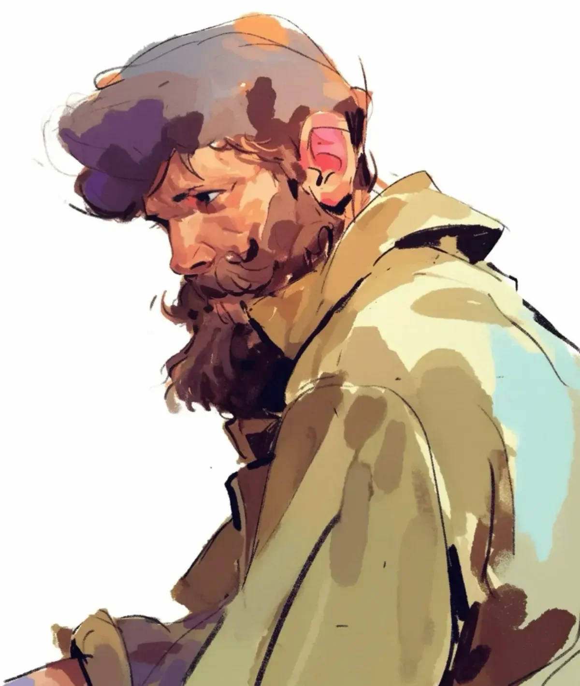

마지막으로 사람의 목소리를 들은 지 석 달이 지났다. 산속 공기는 이제 더욱 매서워져서, 숨을 쉴 때마다 상처를 입을 것만 같았다.
[Three months had passed since he last heard a human voice. The mountain air bit deeper now, each breath sharp enough to wound.]
이른 백발이 섞이고 주변의 소나무처럼 거칠어진 그의 수염에 계절의 첫 눈이 내려앉았다.
[His beard, streaked with early gray and wild as the surrounding pines, caught the first snow of the season.]
수년간 등산 가이드를 하면서 팔꿈치가 반들반들해진 카키색 재킷은 이제 더 헐렁해졌는데, 고독한 몇 달을 보낸 증거였다.
[The khaki jacket he wore, worn smooth at the elbows from years of guiding, hung looser now, a testament to months of solitude.]
그의 석회암 은신처는 물이 돌을 통해 끈기 있게 길을 새긴 산의 심장부 깊숙이 이어져 있었다.
[His limestone shelter ran deep into the mountain’s heart, where water carved patient paths through stone.]
구름버섯들은 안전한 피난처와 위험 사이의 경계를 표시했고, 이는 자연이 만든 경고 표지판이나 다름없었다.
[Turkey tail mushrooms marked the boundaries between safe haven and danger, nature’s own warning signs.]
밤이 되면 미네랄이 풍부한 물방울이 떨어지는 소리와 동굴제비의 부드러운 날갯짓 소리가 그가 선택한 고요함을 거의, 거의, 채워주는 듯했다.
[At night, the dripping of mineral-rich water and the soft rustle of cave swallows created a rhythm that almost, almost, filled the silence he’d chosen.]
그를 이곳으로 몰아넣은 기억은 깨진 화강암처럼 날카로웠다: 의뢰인의 카라비너가 부서지는 소리, 갑자기 그의 확보지점에 두 사람의 생명이 달린 순간, 그리고 그 찰나의 순간에 그가 내린 선택.
[The memory that drove him here remained sharp as broken granite: the sound of his client’s carabiner failing, the weight of two lives suddenly depending on his anchor point, and the choice he’d made in that fraction of a second.]
한 명의 생명이냐 세 명의 생명이냐, 고민할 시간은 없었다. 그날 산은 아무도 죽이지 않았지만, 그의 내면에서 무언가 본질적인 것을 도려냈다.
[One life or three, there had been no time for debate. The mountain hadn’t killed anyone that day, but it had carved something essential out of him.]
그는 구조대원들, 사고 보고서들, 그리고 비난처럼 느껴지는 악수를 뒤로 한 채 떠났다.
[He’d walked away from the rescue crews, the incident reports, the handshakes that felt like accusations.]
하지만 오늘은 뭔가가 달랐다. 바람은 겨울의 경고 이상의 것을 실어왔다. 가뭄에 시달린 숲을 휩쓸고 있는 화재에서 피어오르는 연기 신호를 계곡 아래에서 가져왔다.
[But today something changed. The wind carried more than just winter’s warning, it brought smoke signals from the valley below, where fires raged through drought-stricken forest.]
그는 회색 연기 기둥이 올라가는 것을 보며 그것이 의미하는 바를 알았다: 대피, 긴급 대응, 이 봉우리들을 잘 아는 누군가를 필요로 하는 사람들.
[He watched the gray plumes rise, knowing what they meant: evacuations, emergency responses, people who needed someone who knew these peaks.]
그의 굳은살 박인 손가락이 다시는 만지지 않겠다고 맹세했던 지형도를 찾았고, 이미 가장 안전한 하산 경로를 더듬고 있었다. 동굴은 그의 속죄였다; 산이 그를 다시 임무로 부르고 있었다.
[His calloused fingers found the topographic maps he’d sworn never to touch again, already tracing the safest routes down. The cave had been his penance; the mountain was calling him back to service.]